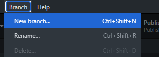
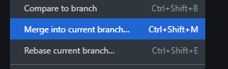
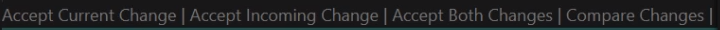

São ramificações de um projeto de softwere ou doumento e tem como objetivo o desenvolvimento paralelo de:
BRANCH MASTER ou MAIN: braço principal de um projeto em m repositório
BRANCH SEGUNDARIO: braço secundário de um projeto em um repositório
De inicio você deve criar uma nova branche e publicar ela, tudo que for inserido nela so ira afetar somente ela.
Você pode fazer a junção entre os brenches utilizando Merge
Apos ter feito o merge dentro do VsCode você deve aceitar as alterações
O GitHub pages oferece hospedagem gratuita de sites. Basta criar uma conta e um repositório público e sua URL será:
Para hospedar a pagina você deve ir no seu repositorio no GitHub em settings
Dentro de setting va até GitHub Pages e la você podera hospedar sua pagina